Kikonai
Kikonai · Hokkaido
Kikonai
Highlighted on the Hokkaido map.
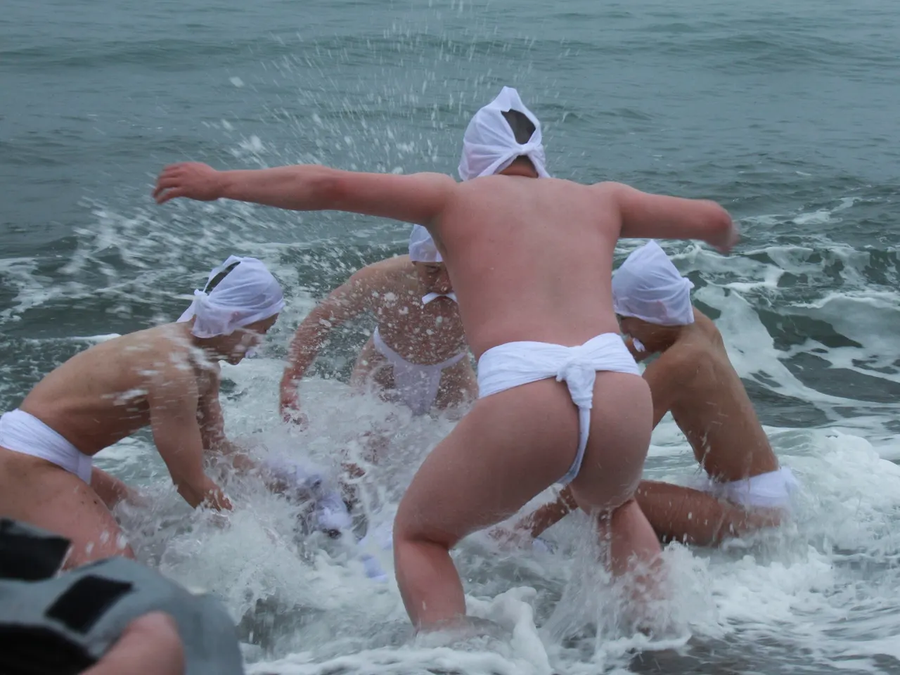
Stay
クラッセイン木古内
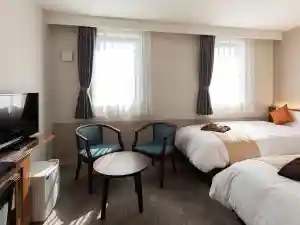
Kurassein Kikonai
宿 きたかい
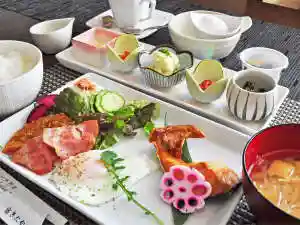
Yado Kitakai
きこないビュウ温泉のとや
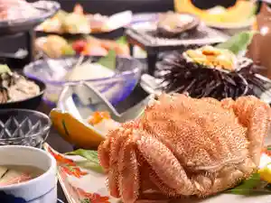
Kikonai Byuu Onsen Notoya
Dining
セイコーマート 木古内店
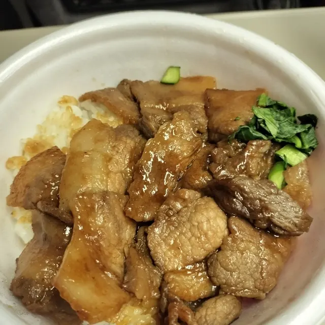
Seikoomaato Kikonai Mise
おかめ
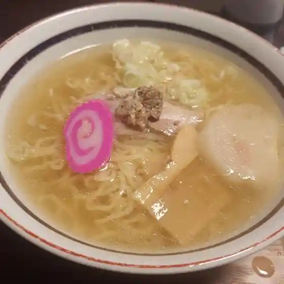
Okame
軽食 喫茶CoCo
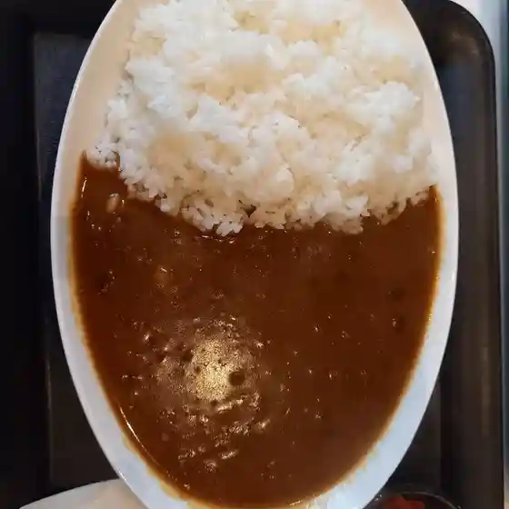
Keishoku Kissa Coco
ツルハドラッグ 木古内店

Tsuruhadoraggu Kikonai Mise
どうなんde's
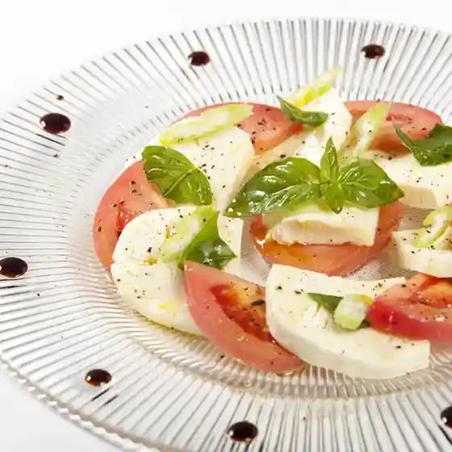
Dounan De'S
あおき和洋亭苑
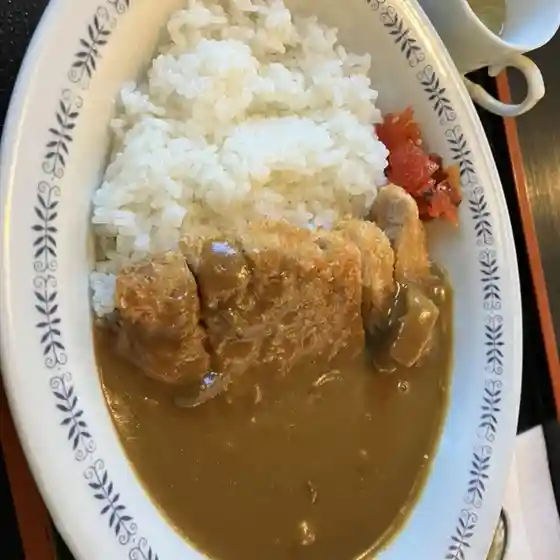
Aoki Wayou Tei En
宿 きたかい
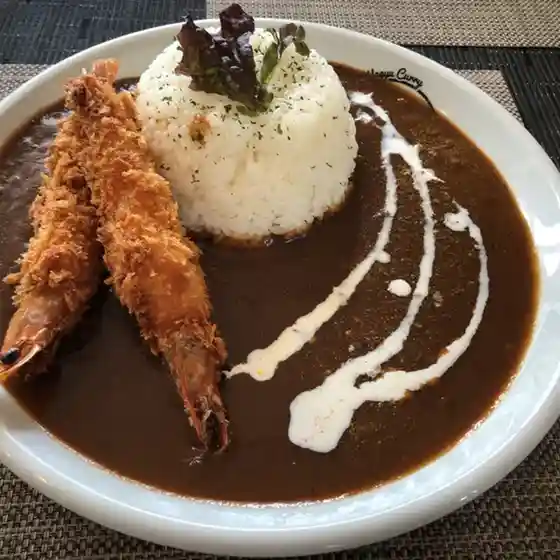
Yado Kitakai
焼肉 テグ
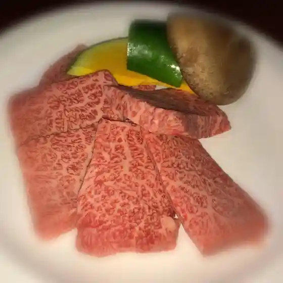
Yakiniku Tegu
久上くどう商店
Kyuu Ue Kudou Shouten
LAWSON 上磯木古内町店
Lawson Kamiiso Kikonai Machi Mise
ヤママル成澤水産
Yamamaru Narisawa Suisan
キッチンキーコ
Kitchinkiiko
スイーツギャラリー 北じま
Suiitsugyararii Kita Jima
ドン・ボーイ
Don Booi
喫茶 その
Kissa Sono
石川屋
Ishikawa Ya
セラーズ ひらの 木古内泉沢店
Seraazu Hirano Kikonai Izumisawa Mise
キャベツ倶楽部
Kyabetsu Kurabu
秋山農園
Akiyama Nouen
セイコーマート 木古内泉沢店
Seikoomaato Kikonai Izumisawa Mise
浜焼 ヤママル
Hamayaki Yamamaru
おてもやん
Otemoyan
レストラン吉澤
Resutoran Yoshizawa
美乃久鮨し店.
Yoshino Kyuu Sushi Shi Mise .